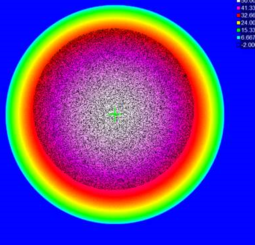
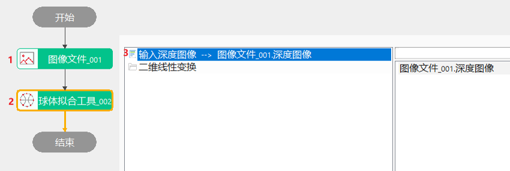
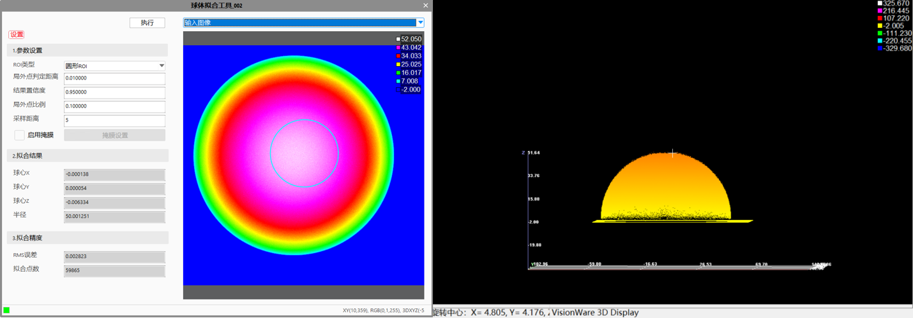
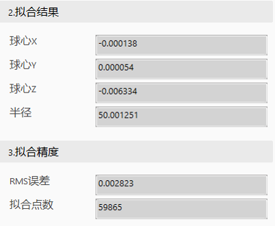

Dung hợp để thu được tọa độ tâm cầu.

Chủ yếu là loại bỏ điểm ngoại lai trong hình ảnh dữ liệu chiều sâu, dựa trên dữ liệu điểm nội để tính toán biểu thức phân tích của cầu, nhằm hỗ trợ các thao tác như hiệu chuẩn toàn cục camera 3D sau này.
Chủ yếu dựa trên khung thuật toán Ransac (cần thiết lập ngưỡng khoảng cách, độ tin cậy và tỷ lệ điểm ngoại lai) để thu được cầu thứ ưu, sau đó đối với cầu thứ ưu thông qua phương pháp tìm kiếm lặp tối ưu để thu được cầu phù hợp tối ưu.

Step 1 【Khoảng cách xác định điểm ngoại lai】0.005~0.01（xem số điểm phù hợp, số điểm quá ít thì cần nới lỏng）
Step 2 【Tỷ lệ điểm ngoại lai】0.3
Step 3 【Độ tin cậy kết quả】0.9999
Step 4 【Khoảng cách lấy mẫu】1（thường điều 1, cần tăng tốc thì có thể nâng cao thích hợp）
Ghi chú: Khung ROI có thể xem trước điểm mây 3D, điều chỉnh kích thước ROI cho phù hợp;


| Mô tả hiện tượng | Phương pháp giải quyết |
|---|---|
| Phù hợp không ra tâm cầu | Nới lỏng khoảng cách xác định điểm ngoại lai |
| Phân loại | Tên tham số | Mô tả tham số |
|---|---|---|
| Cửa sổ thuộc tính | Loại ROI | Vùng cần phù hợp, chia thành 8 loại: toàn bộ hình ảnh, hình chữ nhật, hình chữ nhật affine, hình tròn, đoạn vòng tròn, hình elip, đa giác, đa hình chữ nhật affine. |
| Khoảng cách xác định điểm ngoại lai | Giá trị khoảng cách tối đa từ điểm dữ liệu chiều sâu tham gia phù hợp đến cầu phù hợp. | |
| Tỷ lệ điểm ngoại lai | Tỷ lệ điểm ngoại lai chiếm tổng điểm dữ liệu chiều sâu. | |
| Độ tin cậy kết quả | Đo lường mức độ tin cậy khi sử dụng điểm nội để xây dựng cầu phù hợp, độ tin cậy càng lớn thì cầu phù hợp càng đáng tin. | |
| Khoảng cách lấy mẫu | Lấy mẫu cách nhau bao nhiêu, rút ngắn thời gian phù hợp cầu. | |
| Bật mask | Dùng để lọc vùng không cần phù hợp, thêm mask cho phần này. Chọn “Có” thì có thể thực hiện cài đặt mask qua giao diện nâng cao thuộc tính | |
| Cửa sổ hình ảnh | Hình ảnh chiều sâu | Hiển thị hình ảnh chiều sâu cần phát hiện, hiển thị dưới dạng hình ảnh giả màu. |
| Vùng phù hợp | Hiển thị vùng cần phù hợp trên hình ảnh. | |
| Chuỗi dữ liệu | Hình ảnh chiều sâu đầu vào | Nhập hình ảnh chiều sâu cần phù hợp. |
| Biến đổi tuyến tính 2D | Biến đổi tịnh tiến, xoay, thu phóng của ROI so với mẫu. |
| Phân loại | Tên tham số | Giải thích tham số |
|---|---|---|
| Thanh đầu ra | Hình ảnh chiều sâu đầu ra | Hình ảnh chiều sâu sau khi phù hợp |
| Tâm cầu | Tâm cầu thu được sau khi phù hợp | |
| Bán kính | Bán kính cầu thu được sau khi phù hợp | |
| Lỗi phù hợp | Lỗi RMS của kết quả phù hợp mặt phẳng | |
| Số điểm phù hợp cầu | Số điểm được sử dụng trong quá trình phù hợp cầu | |
| Kết quả thực thi | Kết quả thực thi công cụ | |
| Thời gian thực thi | Thời gian thực thi công cụ |
参见“\Samples\3D\深度图\球体拟合.gvp”。